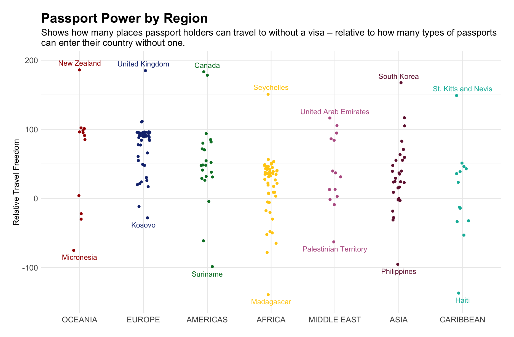

Load data and libraries
tuesdata <- tidytuesdayR::tt_load(2025, week = 36)
country_lists <- tuesdata$country_lists
rank_by_year <- tuesdata$rank_by_year
library(jsonlite)
library(tidyverse)
library(ggtext)
library(paletteer)September 11, 2025

This week I made a plot to visualise which countries’ passport holders had the most travel freedom - relative to how many countries from which other people can enter without a visa.
The plot excludes countries like Australia where no one can enter visa-free (hence why New Zealand tops Oceania). I didn’t have time to problem-solve how to include these.
Things I learned this week:
how to parse json data in R
how to use {ggtext} to add italics to a subtitle
how to control the jitter of geom_point using ‘position = position_jitter(width = x)’
there is a small island country called Niue that looks delightful
free_access <- country_lists %>%
select(code, country, visa_free_access) %>%
rename(origin_code = code,
origin_country = country) %>%
# Temporarily create a new column where the parsed json data will be stored (json_data)
mutate(json_data = map(visa_free_access, ~ {
# the map() function from purrr applies the following functions to every row (each json dataframe, represented by '.x') of the visa_free_access column
jsdata <- fromJSON(.x) # converts/parses the json data into an R list
as_tibble(jsdata[[1]]) # turns the list into a tibble
})) %>%
# unnest the data so that it is no longer dataframes within a dataframe (lengthens the df)
unnest(json_data) %>%
rename(dest_code = code,
dest_country = name) %>%
select(-visa_free_access)free_access <- free_access %>%
group_by(dest_country) %>%
count(name = "countries_with_free_access") %>%
ungroup() %>%
left_join(rank_by_year, join_by(dest_country == country)) %>%
filter(year == 2025) %>%
group_by(region) %>%
mutate(relative_travel_freedom = visa_free_count - countries_with_free_access,
median_rel_travel_freedom = median(relative_travel_freedom)) %>%
ungroup() %>%
mutate(region = fct_reorder(factor(region), median_rel_travel_freedom, .desc = TRUE))
# create dfs for the labelling (top and bottom 5)
top5 <- free_access %>%
group_by(region) %>%
slice_max(order_by = relative_travel_freedom, n = 1) %>%
ungroup()
bottom5 <- free_access %>%
group_by(region) %>%
slice_min(order_by = relative_travel_freedom, n = 1) %>%
ungroup()p <- ggplot(free_access,
aes(region,
relative_travel_freedom,
color = region)) +
geom_point(position = position_jitter(width = 0.1)) +
geom_text(data = top5,
aes(label = dest_country),
nudge_y = 10) +
geom_text(data = bottom5,
aes(label = dest_country),
nudge_y = -10) +
labs(x = NULL,
y = "Relative Travel Freedom",
title = "Passport Power by Region",
subtitle = "Shows the difference between the *number of countries a passport-holder can travel to visa-free* and <br> the *number of countries from which people can enter visa-free*.<br><br>Passport holders from countries with high relative travel freedom can travel to many places<br>without a visa, but not many people from other countries can enter without a visa. Conversely,<br>passport holders from countries with low relative travel freedom cannot travel many places<br>without a visa, while passport-holders from many other countries can enter freely.") +
scale_color_paletteer_d("MetBrewer::Austria") +
theme_minimal() +
theme(legend.position = "none",
plot.subtitle = element_markdown(),
plot.title = element_text(face = "bold"))